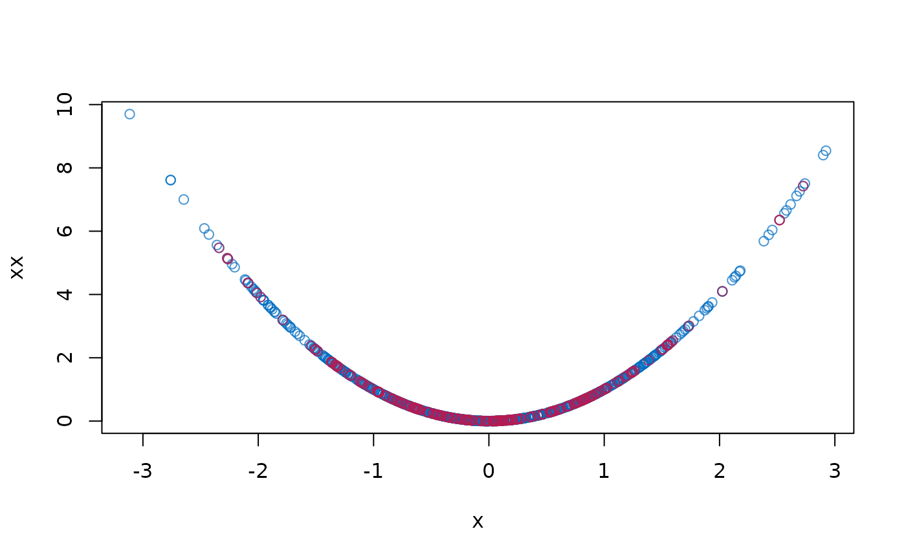
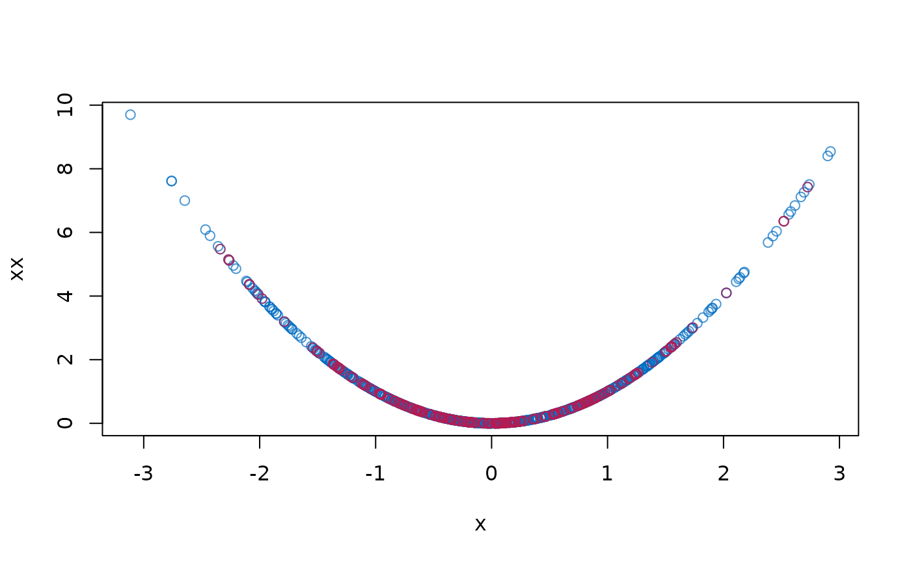

Imputation by multivariate predictive mean matching
Source:R/mice.impute.mpmm.R
mice.impute.mpmm.RdImputes multivariate incomplete data among which there are specific relations, for instance, polynomials, interactions, range restrictions and sum scores.
Arguments
- data
matrix with exactly two missing data patterns
- format
A character vector specifying the type of object that should be returned. The default is
format = "imputes".- ...
Other named arguments.
Details
This function implements the predictive mean matching and applies canonical regression analysis to select donors fora set of missing variables. In general, canonical regressionanalysis looks for a linear combination of covariates that predicts a linear combination of outcomes (a set of missing variables) optimally in a least-square sense (Israels, 1987). The predicted value of the linear combination of the set of missing variables would be applied to perform predictive mean matching.
Note
The function requires variables in the block have the same missingness pattern. If there are more than one missingness pattern, the function will return a warning.
See also
mice.impute.pmm
Van Buuren, S. (2018).
Flexible Imputation of Missing Data. Second Edition.
Chapman & Hall/CRC. Boca Raton, FL.
Other univariate imputation functions:
mice.impute.cart(),
mice.impute.lasso.logreg(),
mice.impute.lasso.norm(),
mice.impute.lasso.select.logreg(),
mice.impute.lasso.select.norm(),
mice.impute.lda(),
mice.impute.logreg.boot(),
mice.impute.logreg(),
mice.impute.mean(),
mice.impute.midastouch(),
mice.impute.mnar.logreg(),
mice.impute.norm.boot(),
mice.impute.norm.nob(),
mice.impute.norm.predict(),
mice.impute.norm(),
mice.impute.pmm(),
mice.impute.polr(),
mice.impute.polyreg(),
mice.impute.quadratic(),
mice.impute.rf(),
mice.impute.ri()
Examples
require(lattice)
#> Loading required package: lattice
# Create Data
B1 <- .5
B2 <- .5
X <- rnorm(1000)
XX <- X^2
e <- rnorm(1000, 0, 1)
Y <- B1 * X + B2 * XX + e
dat <- data.frame(x = X, xx = XX, y = Y)
# Impose 25 percent MCAR Missingness
dat[0 == rbinom(1000, 1, 1 - .25), 1:2] <- NA
# Prepare data for imputation
blk <- list(c("x", "xx"), "y")
meth <- c("mpmm", "")
# Impute data
imp <- mice(dat, blocks = blk, method = meth, print = FALSE)
# Pool results
pool(with(imp, lm(y ~ x + xx)))
#> Class: mipo m = 5
#> term m estimate ubar b t dfcom
#> 1 (Intercept) 5 0.02307213 0.0014235386 3.306329e-05 0.0014632146 997
#> 2 x 5 0.49685262 0.0009193958 2.268788e-05 0.0009466212 997
#> 3 xx 5 0.47500748 0.0004548274 2.848941e-05 0.0004890147 997
#> df riv lambda fmi
#> 1 821.7978 0.02787135 0.02711560 0.02947469
#> 2 805.4292 0.02961234 0.02876067 0.03116345
#> 3 434.3232 0.07516541 0.06991055 0.07416411
# Plot results
stripplot(imp)
 plot(dat$x, dat$xx, col = mdc(1), xlab = "x", ylab = "xx")
cmp <- complete(imp)
points(cmp$x[is.na(dat$x)], cmp$xx[is.na(dat$x)], col = mdc(2))

plot(dat$x, dat$xx, col = mdc(1), xlab = "x", ylab = "xx")
cmp <- complete(imp)
points(cmp$x[is.na(dat$x)], cmp$xx[is.na(dat$x)], col = mdc(2))
